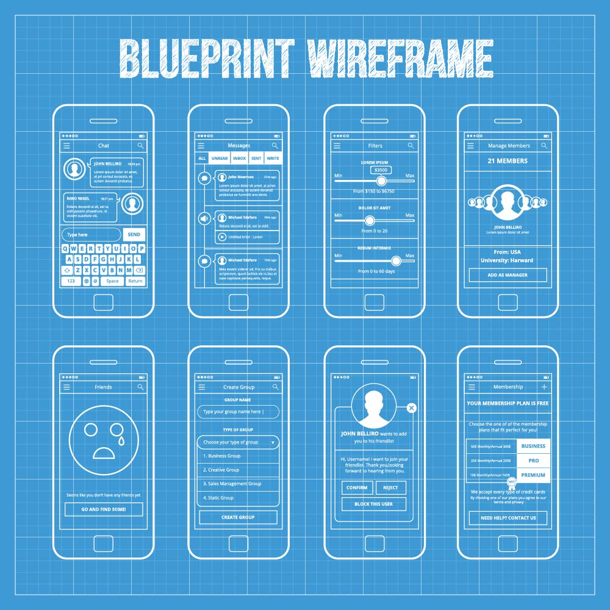
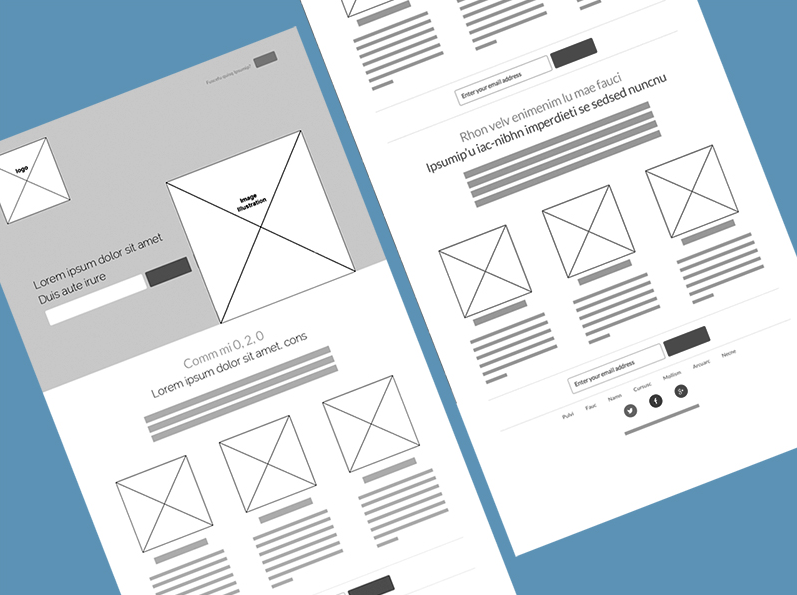

Mike Carter
Fitness Tracker
This name represents a web-based fitness tracking application that helps users monitor their workouts, set goals, and track progress over time.
Optional domain availability: Check availability
Site Purpose
The Fitness Tracker website is designed to help users log their fitness activities, set personal goals, and track their workout progress. Users will have access to interactive charts, daily logs, and goal-setting features to stay motivated on their fitness journey.
Scenarios
- How can I log my daily workouts?
- What progress have I made in the past month?
- How do I set a new fitness goal?
Color Schema
- Primary Color: #4CAF50 (Green) - Used for headings, buttons, and accents.
- Secondary Color: #2C3E50 (Dark Blue) - Used for backgrounds and navigation.
- Accent Color: #FFC107 (Yellow) - Used for highlights and alerts.
Typography
- Heading Font: Poppins (Google Font) - Used for all headers.
- Body Font: Open Sans - Used for paragraph text and general content.
Wireframe
Below is a wireframe representation of the homepage layout.
 